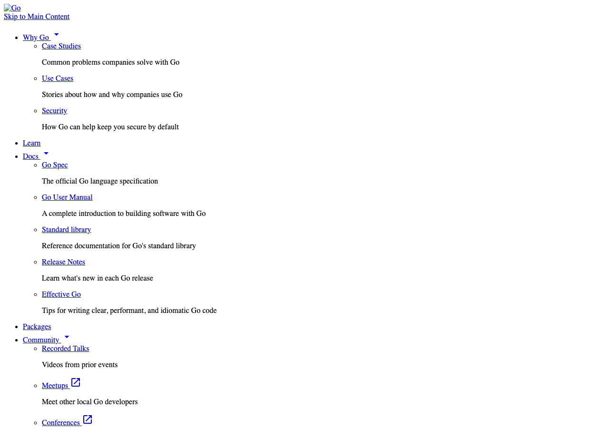

新闻/博客长文 · news_001_go_loopvar_preview
1.00sourceCoverage
1.00groundingCompleteness
1.00jumpbackCoverage
0.03noiseRatio
- entity · Next article : Deconstructing Type Parameters Previous article : WASI support in Go Blog Index Why sourceRefs 1
- definition · Tools have been written to identify these mistakes , but it is hard to analyze whether sourceRefs 1
- definition · Old code will continue to mean exactly what it means today : the fix only applies sourceRefs 1